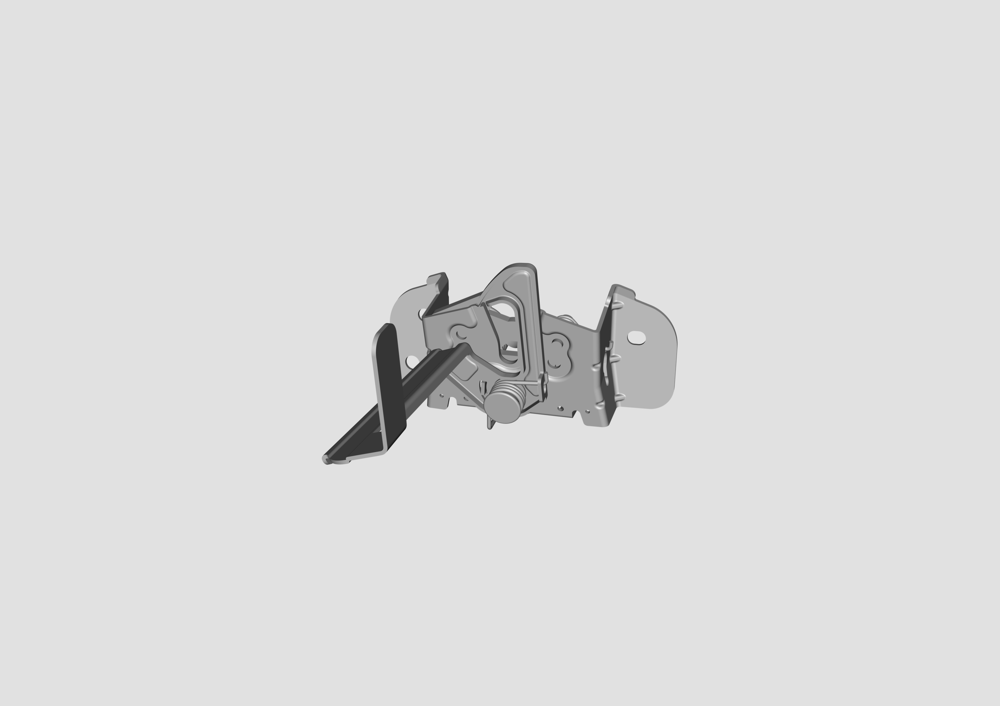

Замок капота расположен в передней части капота, как показано на рисунке.

При закрытии капота нажать на капот обеими руками, чтобы защелкнуть фиксатор капота в замке и завершить запирание.
Для открытия капота потянуть за ручку разблокировки капота в левой нижней части панели приборов: потянуть 1 раз для первой ступени разблокировки, потянуть 2 раза для полной разблокировки капота.